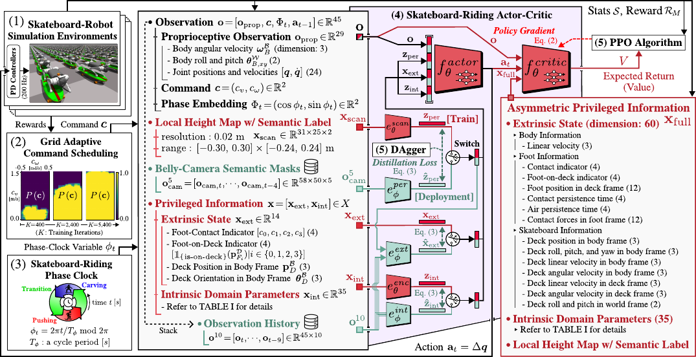
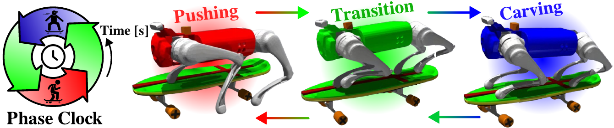
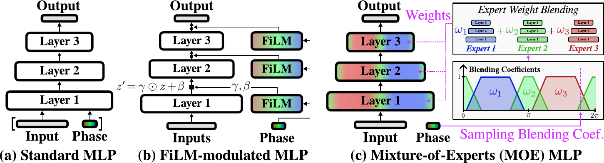
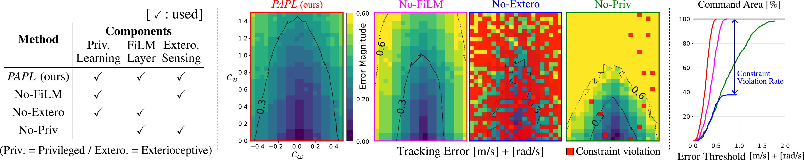
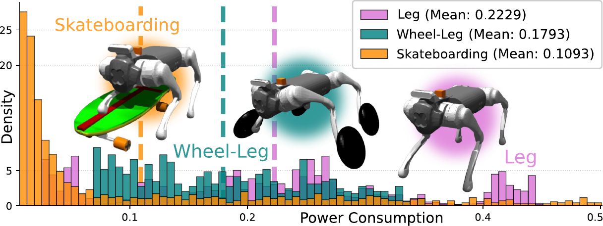
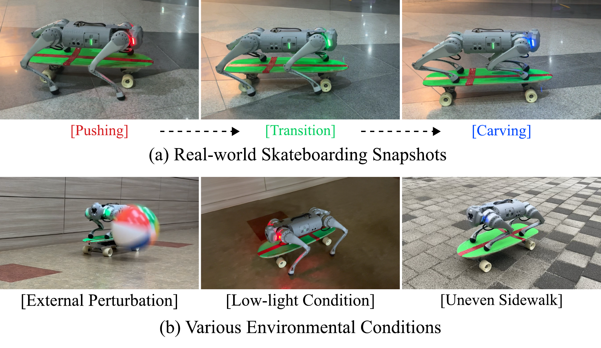

Controlling a skateboard with a legged robot is difficult due to perception-driven contact and multi-modal objectives across riding phases. We propose Phase-Aware Policy Learning (PAPL), an RL framework that modulates actor and critic networks with phase-conditioned FiLM layers, yielding a unified policy that captures phase-specific behavior while sharing robot-level knowledge. PAPL attains accurate command-following in simulation and transfers zero-shot to hardware.






@misc{yoon2026phaseawarepolicylearningskateboard,
title = {Phase-Aware Policy Learning for Skateboard Riding of
Quadruped Robots via Feature-wise Linear Modulation},
author = {Minsung Yoon and Jeil Jeong and Sung-Eui Yoon},
year = {2026},
eprint = {2602.09370},
archivePrefix = {arXiv},
primaryClass = {cs.RO},
url = {https://arxiv.org/abs/2602.09370}
}